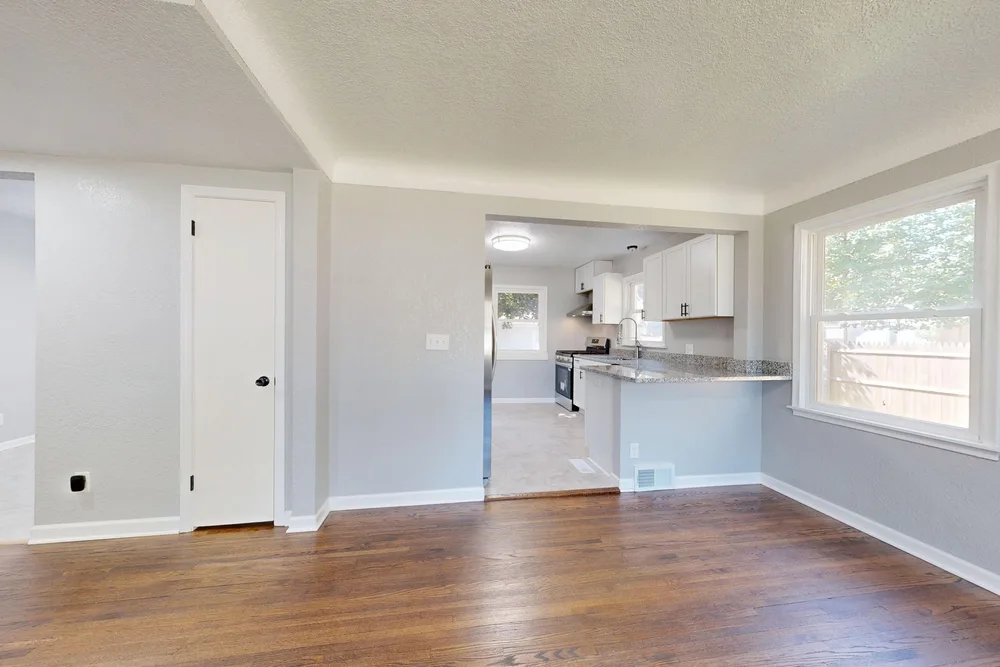
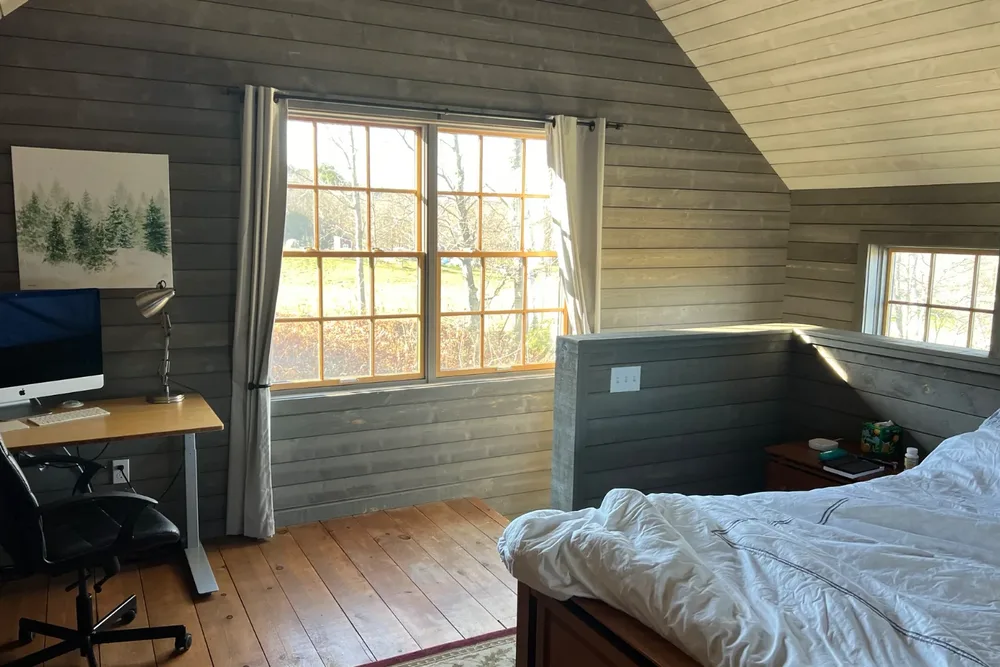
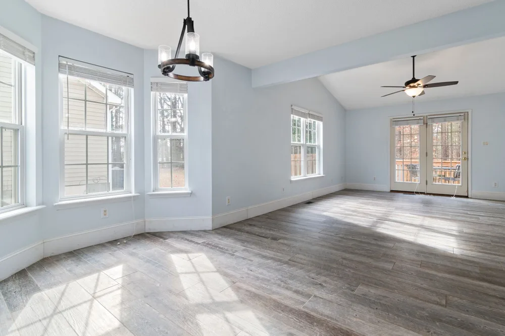
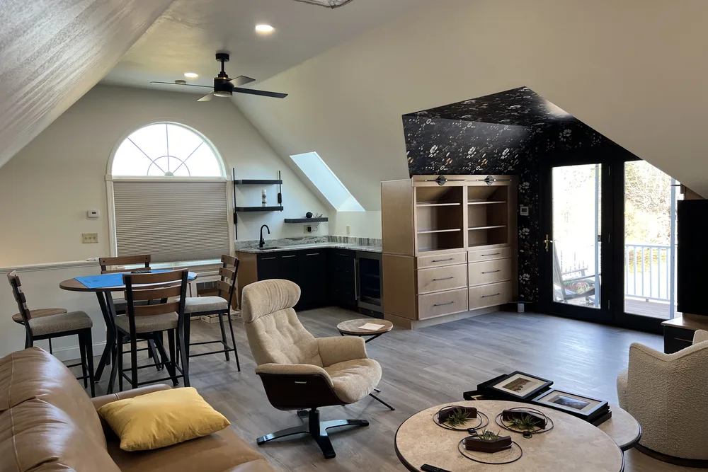
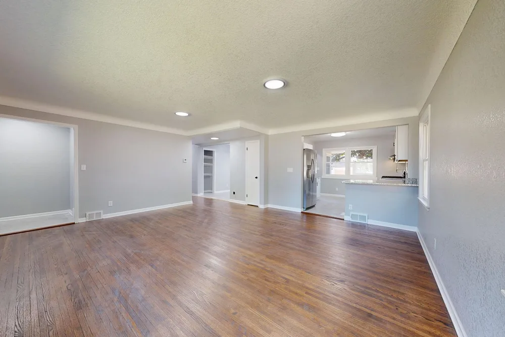
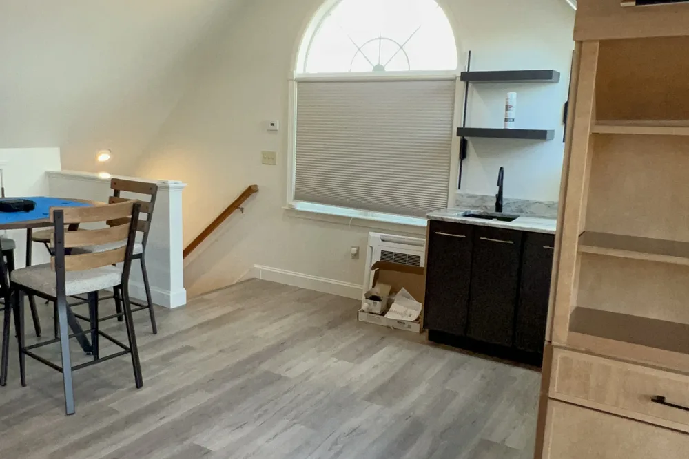
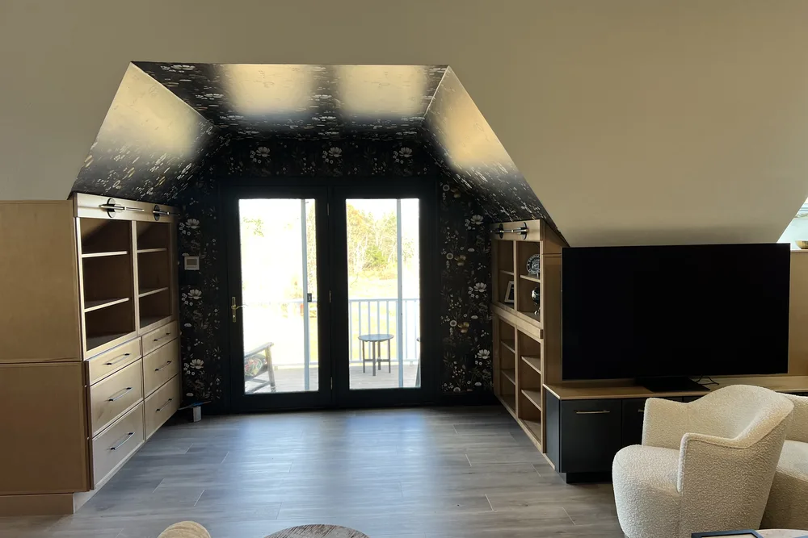
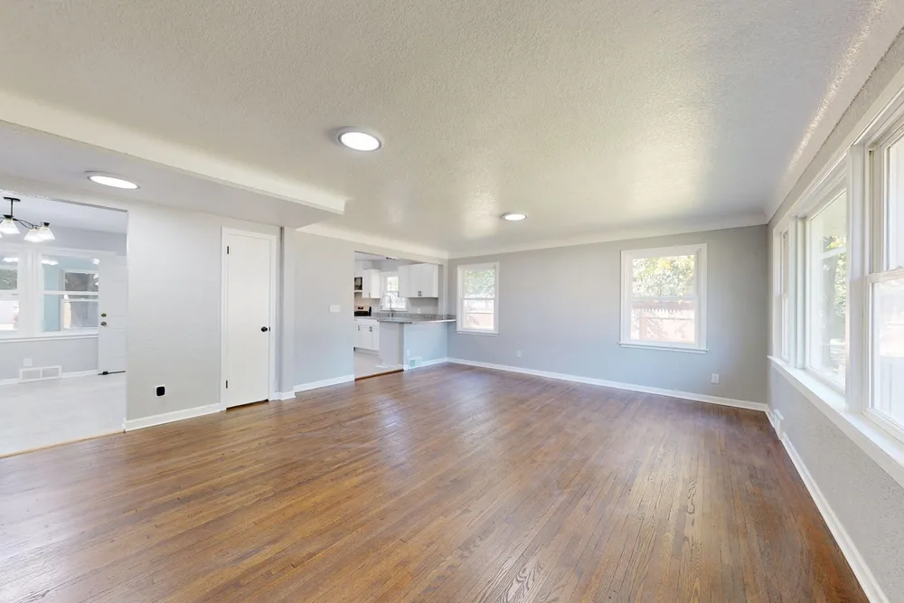

Carlisle remodeling contractors
Carlisle remodeling contractors for a home that finally works
Carlisle remodeling from DeFaria Construction turns dated or awkward spaces into finished rooms, with a clear scope, honest sequencing and careful finish work.
Local search focus
Carlisle remodeling is about the plan as much as the finish.

Across Carlisle Town Center, South Street area, East Street area and West Street area, Carlisle is mostly historic farmhouses and contemporary estates on two-acre wooded parcels along winding country roads. A Carlisle remodel that stays organized, from demolition to the final trim, is what separates a smooth project from an endless one.
This page is built for Carlisle homeowners comparing remodeling contractors near them. It connects the Carlisle search to project photos, neighborhoods, the full remodel scope and a direct estimate path.
- Clear estimate conversations before the project starts.
- Direct communication with the homeowner from walkthrough to final walkthrough.
- Local coverage across Carlisle and the wider Middlesex County area.
The scope
What a full Carlisle remodel covers

In Carlisle, historic farmhouses and contemporary estates on two-acre wooded parcels along winding country roads often add access and site constraints.
- Framing and finish carpentry built around the real layout.
- Surfaces, trim and fixtures selected to work together.
- Electrical, lighting and plumbing sequenced ahead of the finish.
Carlisle permits and inspections run through the Town of Carlisle Building Department, and DeFaria keeps that step organized so scope and timeline stay realistic.
Cost
How much does a remodel cost in Carlisle?

A remodel in Carlisle ranges widely by scope, from about $15,000 for a single room to $100,000 or more for a whole-home remodel. The rooms involved and the level of finish set the number.
- How many rooms are in the project.
- The level of finish and material grade.
- Whether the layout, walls or plumbing change.
- The age and condition of the home behind the walls.
In Carlisle, historic farmhouses and contemporary estates on two-acre wooded parcels along winding country roads often add access and site constraints, and that can show up in the plumbing, prep and rot-repair line of the estimate.
DeFaria gives a fixed, itemized Carlisle estimate at the walkthrough, so the price matches the actual scope instead of a guess.
Process
How a Carlisle remodel runs, step by step

Every Carlisle remodel runs on a clear sequence, so nothing catches you off guard.
- A walkthrough and an itemized estimate.
- Design, layout and material selections.
- Home protection and demolition.
- Framing and structural changes.
- Rough-in for electrical, plumbing and HVAC.
- Drywall, trim and finish work.
- Paint, punch list and a final walkthrough with you.
DeFaria coordinates the Carlisle permit with the Town of Carlisle Building Department before the rough-in, and keeps you updated at each step.
A Carlisle remodel timeline depends on scope, from a couple of weeks for one room to a few months for a whole-home project.
Materials
Materials and finishes that last in Carlisle homes

Middlesex County homes take daily wear and cold winters, so the finishes are chosen for durability, not just looks.
- Flooring chosen for wear, not just appearance.
- Finish carpentry and trim built to last.
- Proper drywall and paint prep behind the finish.
- Hardware and fixtures that keep working.
From Carlisle Town Center to East Street area, historic farmhouses and contemporary estates on two-acre wooded parcels along winding country roads often add access and site constraints, which is exactly why the finish is specified for the home rather than a catalog.
When to remodel
Signs it is time to remodel in Carlisle

A few clear signs a Carlisle home is ready for a remodel:
- Dated rooms that no longer fit how you live.
- A layout that fights daily routines.
- Worn floors, trim, doors or surfaces.
- Wasted or awkward space you work around.
- Getting the home ready to sell.
Older homes around Carlisle Town Center and South Street area in Carlisle show these first.
Project photos
Remodeling photos for Carlisle homeowners
The Carlisle remodeling page pairs local search intent with real project photos, so visitors see the finish level before requesting an estimate.

Areas covered
Remodeling across Carlisle neighborhoods

DeFaria Construction supports remodeling searches across Carlisle and nearby Middlesex County towns, giving visitors enough local context to decide whether DeFaria is the right fit before they call.
From Carlisle Town Center to West Street area, Carlisle homeowners get a remodeling permitted through the Town of Carlisle Building Department and matched to how local homes are built.
- Carlisle Town Center
- South Street area
- East Street area
- West Street area
Experience
Why this Carlisle page is built for real homeowners, not just keywords.
DeFaria Construction is a local construction and remodeling company serving homeowners and business owners across Essex County and Middlesex County. With direct owner involvement from Luiz DeFaria and BBB A+ credibility in the trust stack, the Carlisle remodeling page is written around real scope, sequencing and finish coordination, not a city name dropped into a template.
DeFaria Construction is a licensed and insured local contractor with an A+ BBB rating and verified customer reviews, and every Carlisle project is owner-led by Luiz DeFaria from the first walkthrough to the final one.
"clean work and clear updates through the whole Carlisle remodel."
Carlisle homeowner
The goal is to help someone searching for Carlisle remodeling contractors understand the scope, the neighborhoods covered and how to start a direct conversation before requesting a free estimate.
Call (617) 893-2221 for a free estimateFAQ
Common questions about remodeling in Carlisle
What remodeling work does DeFaria Construction handle in Carlisle?
In Carlisle DeFaria Construction handles interior remodels room by room or whole-home: framing, drywall, flooring, trim, paint, and electrical and plumbing coordination with finish carpentry.
How much does a remodel cost in Carlisle?
A Carlisle remodel ranges from about $15,000 for a single room to $100,000 or more for a whole-home project. DeFaria gives a fixed, itemized estimate at the walkthrough so the price matches the real scope.
How long does a Carlisle remodel take?
It depends on scope, from a couple of weeks for one room to a few months for a whole-home Carlisle remodel. DeFaria sets a realistic sequence at the walkthrough.
Can DeFaria remodel one room at a time in Carlisle?
Yes. Many Carlisle projects start with one room, kitchen, bath or living area, and DeFaria plans the scope so the work fits the home and the budget.
Is DeFaria Construction licensed and insured?
Yes. DeFaria Construction is a licensed and insured contractor with an A+ BBB rating and verified reviews, and every Carlisle project is owner-led by Luiz DeFaria.
Does DeFaria handle Carlisle remodeling permits and inspections?
Yes. Carlisle permits and inspections run through the Town of Carlisle Building Department, and DeFaria keeps that step organized so scope and timeline stay realistic.